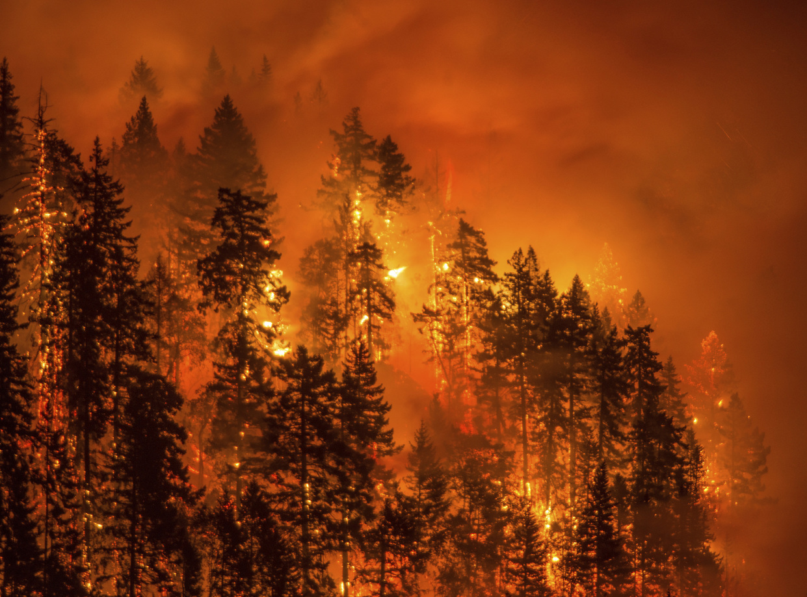
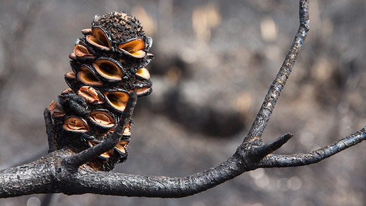
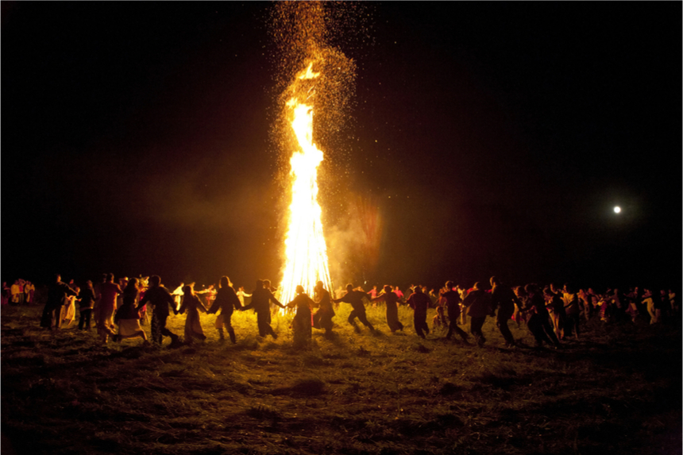
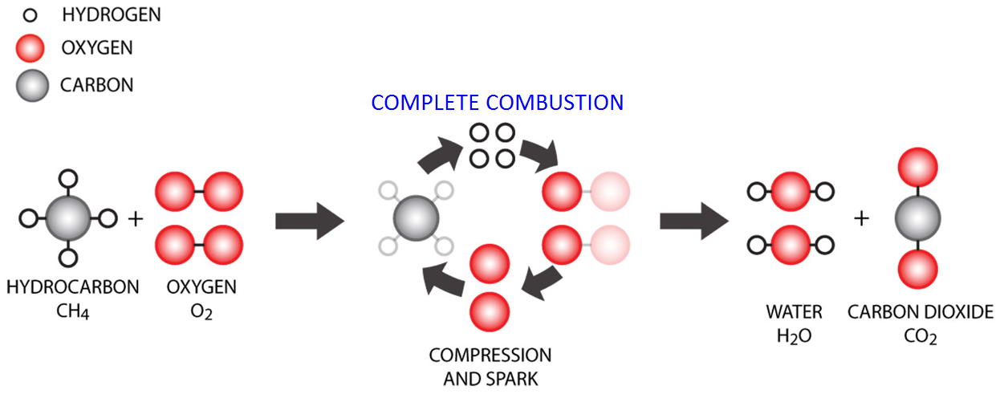
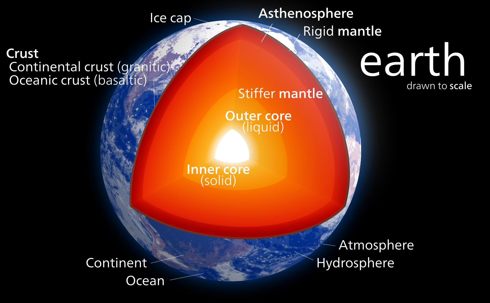

A forest fire near Stevenson, Washington, USA
Forest fires are a natural part of the succession process
within many
different ecosystems.

A Banksia cone, opened following a forest fire
Many plants rely on the occasional fire to activate their
seeds.

A group of people dancing around a bonfire
Fire has captivated the imagination of humans since it was
first discovered
hundreds of thousands of years ago. To this day, despite the proliferation of
electronic lights, fires
remain a focal point for social activities
A large number of candles, burning all at once
The light from candles is much softer and more controlled.

Combustion
The chemical reaction of combustion fuels fires. The reaction creates a feedback loop between increased heat and increased reactivity, as can be seen in this diagram.
The reaction
requires oxygen, which is why a fire can be put out by covering it with an object.

The internal structure of Earth
Earth is fueled by internal fires, without which life as we
know it would
cease to exist.
Previous
Next
If you would like to create a shrine in order to pay homage to the element and encourage its energy's presence in your life,
gather items that remind you of Fire. Follow your intuition in finding these items. They could be candles, volcanic rocks,
red cloths, or anything else that reminds you of the passion and fire within you. Find a sacred spot, and arrange the items there in a way
that feels inspirational to you (feel free to experiment and rearrange them--there's no wrong answer!), and take a moment now and then to come
to the shrine and nurture your connection with the spirit of Fire whenever you feel the need to stoke the fires of passion, connection with the past, and purpose within you.